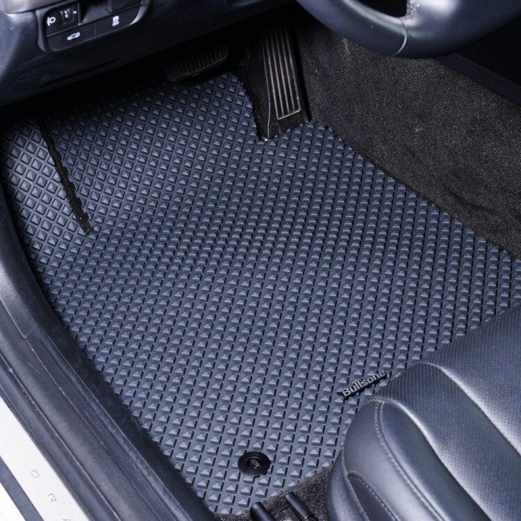
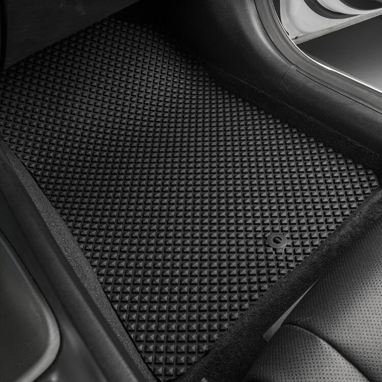
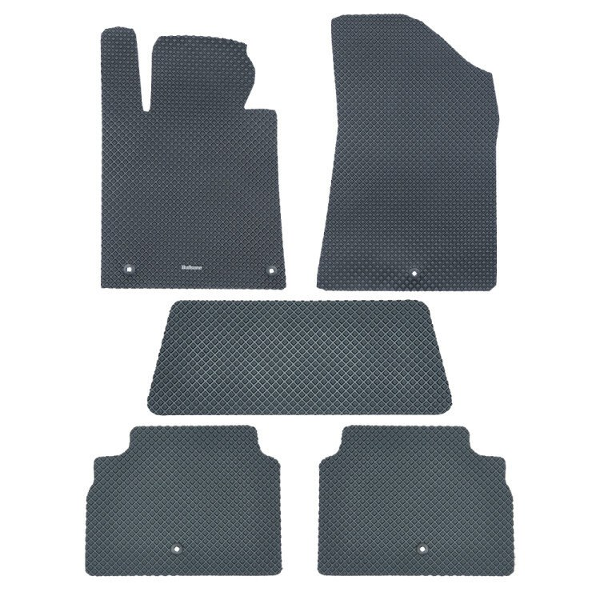
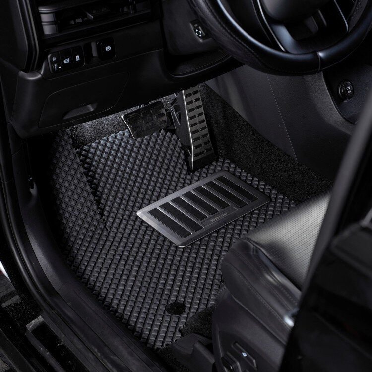

Bullsone EZ Clean TPE Car Mat Review: Overview
This Bullsone EZ Clean TPE car mat review looks at a made-to-order set of floor mats from Bullsone, the Korean car-care brand best known for its fuel additives. Instead of the heavy PVC coil mats many Korean drivers use, these mats are made of TPE (thermoplastic elastomer) with a raised pyramid pattern that holds dirt in the dips and lets water run off. Each set is cut for a specific car model, and Bullsone says it is about 40% lighter than a PVC coil mat.
The Bullsone official store listing on Naver Shopping Connect that we checked (black) was priced at 94,000 KRW when collected on October 27, 2026; Bullsone's own store showed 89,000 KRW against a 199,000 KRW list price in late November 2026. Bullsone's store showed a 4.7 / 5 rating from more than 3,000 buyer reviews. We checked the details against Bullsone's product page and the product notice on its store. We did not fit the mats in our own car, so this review is based on the maker's data and owner reviews.
"A light, easy-to-clean alternative to coil mats. The fit is close but not perfect, so check your car's code carefully."

Design and Cleaning: Pyramid Pattern and "Water Way"
The surface is covered in small raised pyramids. Bullsone says the sloped sides guide sand and dust down into the gaps, where they stay instead of being kicked back onto your shoes, and the slight bounce of the pyramids takes some pressure off your foot on long drives. Between the pyramids is what Bullsone calls the Water Way system, a set of straight channels that let water and dirt run off when you rinse the mat (Korean patent no. 10-2924350, per Bullsone).
In Bullsone's own comparison, a handheld vacuum removed about 99.7% of test sand from the TPE mat, against 81.4% from a fabric mat and 3.5% from a PVC coil mat. Bullsone also says it sheds water about five times better than a coil mat. These are the maker's tests, but owner reviews back up the general point: many say dust shakes off easily and a wet tissue cleans muddy shoe marks.

Material, Weight and Safety
Bullsone says the mat is the first car mat to earn Korea's Environmental Label (eco-label) certification. Because it contains no PVC, it does not give off hydrogen chloride gas when it burns: in a KOTITI test cited by Bullsone, a PVC coil mat released 187,150.9 ppm of hydrogen chloride while none was detected from the TPE mat.
It is also light. In Bullsone's figures, a full set weighs 3.50 kg, against 4.70 kg for a PVC coil mat and 6.52 kg for a PVC rubber mat. That makes it easier to pull out, shake off and put back. Bullsone also points out that TPE does not deform as easily as EVA mats and avoids the strong smell of some PVC rubber mats.

Fit, Options and Ordering
This is a made-to-order product. You choose your brand, model, year and a fitment code (for example HD890 for one Hyundai Tucson generation), and Bullsone cuts the set for front and rear rows. There are options with or without a heel pad on the driver's mat, and the underside has Velcro-style fasteners to help it stay put. Black is the colour in the listing we checked; Bullsone's Kakao store offers a second colour.
Owner reviews are mostly positive about fit, but not all. Some say the mats fit "like the original"; others mention gaps of about 1 cm, a rear centre mat that does not sit flat, or seat rails covered on minivans. One reviewer found the metal heel pad slippery. Because it is custom-cut, check the return policy before ordering.

Key Specs
| Spec | Bullsone EZ Clean TPE Car Mat |
|---|---|
| Type | Made-to-order car floor mat set (front and rear rows) |
| Material | TPE (thermoplastic elastomer), non-PVC |
| Surface | Raised pyramid pattern with "Water Way" drain channels |
| Weight (full set) | 3.50 kg (Bullsone test; PVC coil mat 4.70 kg) |
| Certification | Korea Environmental Label (per Bullsone) |
| Fitment | Hyundai, Kia, Genesis, GM Korea, KGM, Renault Korea, BMW, Mercedes-Benz, Tesla, Lexus, Volvo, Audi (by code) |
| Options | With or without driver heel pad; black (second colour on some stores) |
| Launched | March 14, 2025 |
| Made in | Korea, by Bullsone Co., Ltd. |
| Korean price | 94,000 KRW at the Bullsone official Naver store (collected Oct 27, 2026) |
| Owner rating | 4.7 / 5 from 3,000+ reviews on Bullsone's store |
Specs come from Bullsone's product page and product notice; the price comes from the Naver Shopping Connect listing. Cleaning, weight and gas figures are Bullsone's own test claims, and we did not test the mats ourselves.
How It Compares
| Bullsone EZ Clean TPE (this) | PVC coil mat | Fabric (carpet) mat | |
|---|---|---|---|
| Cleaning | Shake, vacuum or rinse; dries fast | Dirt sinks into the coils | Stains soak in; slow to dry |
| Weight | Light (3.50 kg set) | Heavier (about 4.7 kg) | Light |
| Feel underfoot | Firm with slight bounce | Soft and cushioned | Soft |
| Water and snow | Runs off through channels | Holds water in the coils | Absorbs water |
| Best for | Easy cleaning and families with kids | Drivers who like a cushioned feel | Quiet, plush interiors |
Pros & Cons
| Pros | Cons |
|---|---|
| Easy to clean: shake, vacuum or rinse | Fit can be off by about 1 cm on some cars |
| About 40% lighter than a PVC coil mat | Firmer and less cushioned than coil mats |
| Non-PVC; no hydrogen chloride in Bullsone's fire test | Custom-cut, so returns may be limited |
| Cut to order for many Korean and imported cars | Metal heel pad option can feel slippery |
| 4.7 / 5 from 3,000+ owner reviews | Only for cars on Bullsone's fitment list |
Who It Suits (and Who Should Skip It)
- Yes: Drivers tired of heavy coil mats that trap sand and dust.
- Yes: Families with kids, pets or muddy outdoor gear who clean the car often.
- Yes: Anyone who wants to avoid PVC in the cabin.
- No: Drivers who love a soft, cushioned feel underfoot.
- No: Owners of cars not on Bullsone's list, or anyone outside Korea; look for a custom-fit TPE mat made for your car.
Bullsone EZ Clean TPE Car Mat FAQ
What is the Bullsone EZ Clean TPE car mat?
It is a made-to-order set of car floor mats from Bullsone, a Korean car-care brand. The mats are made of TPE (thermoplastic elastomer) instead of PVC or fabric, with a raised pyramid pattern that traps dirt and lets water run off. Bullsone launched it on March 14, 2025, and it is made in Korea.
Is TPE better than a PVC coil mat?
For cleaning and weight, mostly yes. In Bullsone's own tests, the TPE mat weighed 3.50 kg against 4.70 kg for a PVC coil mat, and a handheld vacuum removed about 99.7% of test sand from it against 3.5% from a coil mat. Coil mats feel softer underfoot, so if you like a cushioned feel, TPE may feel harder.
Does the mat fit my car?
Each set is cut to order for a specific car. Bullsone lists Hyundai, Kia, Genesis, GM Korea, KGM, Renault Korea, BMW, Mercedes-Benz, Tesla, Lexus, Volvo and Audi models, each with its own fitment code. If your car is not on the list, Bullsone says it cannot make one yet. Several owner reviews mention small gaps of about 1 cm, so expect a close fit, not a perfect one.
How do I clean it?
Take the mat out, shake or vacuum off the dirt, and rinse it with water if needed. Bullsone says the pyramid pattern lets water and dirt run off and the mat dries quickly. Owners often say a quick wipe with a wet tissue is enough for daily dirt.
Can I buy the Bullsone EZ Clean TPE mat in the U.S.?
It is sold in Korea through Bullsone's own store and Korean marketplaces, and the fitment list covers Korean-market cars. The Amazon button on this page searches for custom-fit TPE floor mats sold for U.S. cars instead.
Custom-Fit TPE Car Floor Mats
The Bullsone EZ Clean mat is made to order for Korean-market cars. Custom-fit TPE floor mats for U.S. cars are sold under other brands; compare current listings on Amazon.